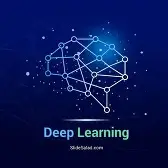

Explore, Register, and Track Your Academic Journey.
Interested in learning? Click 'Get Started' to begin your journey.
Learn New technology
Stay curious and embrace the power of new technology. Learn today to lead the future
Partice More
Write more code, make mistakes, and keep learning. That's how great programmers are made.
Keep Consistent
Stay consistent and trust the process. Small efforts every day lead to big results
Top Courses 2026
Artifical Intelligence
Machine Learning

Deep Learning
Cyber Security
Python
Data Science
Mongo DB
Cloud Computing
ARTIFICAL INTELLIGENCE
Course Overview
Dive into the fundamentals of Artificial Intelligence, exploring how machines mimic human intelligence to solve complex real-world problems. This hands-on, Python-driven course bridges the gap between theoretical math and practical engineering, preparing you for foundational projects in machine learning, data science, and deep neural networks.
Module 1: Foundational Math & Data Elements
Before training smart models,you need to understand the underlying mathematics and structural logic that power AI frameworks
Linear Algebra Fundamentals:
Matrix multiplication, vectors, and linear transformations ($Ax = \lambda x$).
Calculus Core:
Partial derivatives, gradients, and the Chain Rule for optimization tracking.
Probability & Information Theory:
Probability distributions, conditional probability, Bayes’ Theorem, and entropy metrics.
Module 2: Intelligent Search & Logic Systems
Learn how classical AI programs navigate complex problem domains, find optical pathways, and process constraints
Uninformed Search Strategies:
Breadth-First Search (BFS) and Depth-First Search (DFS).
Informed (Heuristic) Search:
Greedy Best-First Search and $A^*$ Search algorithms.
Adversarial Game Theory:
MiniMax algorithm framework and Alpha-Beta Pruning optimized for logical choice matrices.
Module 3: Hands-On Production Libraries
Master the essential engineering toolkits required to clean data, manipulate high-dimensional arrays, and build robust automated pipelines.
NumPy:
High-performance vector operations and multi-dimensional matrix manipulation.
Pandas:
Advanced data cleaning, preprocessing, parsing missing attributes, and feature transformations.
Matplotlib & Seaborn:
Generating analytical data visualizations, correlation heatmaps, and outlier charts.
Module 4: Machine Learning Core (Scikit-Learn)
Transition into foundational statistical learning techniques for predictive modeling.
Supervised Learning:
Linear Regression, Logistic Regression, and Decision Trees.
Unsupervised Learning:
Clustering frameworks ($K$-Means, Hierarchical) and Dimensionality Reduction (PCA).
Model Evaluation:
Precision, Recall, F1-Score, ROC-AUC metrics, and cross-validation methodologies.
Module 5: Introduction to Neural Networks & Deep Learning
Unpack the architectural systems behind modern generative frameworks and automated recognition pipelines.
The Artificial Perceptron:
Mathematical breakdown of artificial neurons, weighted inputs, and threshold thresholds.
Loss calculation structures and Gradient Descent optimization routines ($w \leftarrow w - \alpha \frac{\partial L}{\partial w}$).
MACHINE LEARNING
Course Overview
Master the core statistical algorithms and predictive modeling techniques used by data scientists to extract patterns from complex datasets. This course offers a deep dive into building, evaluating, and fine-tuning predictive systems using Python, enabling you to build intelligent applications that adapt and learn over time.
Module 1: Preprocessing & Predictive Diagnostics
Learn how to process noisy raw datasets, handle missing variables, and transform your data to meet mathematical assumptions.
Data Cleansing & Imputation:
Strategies for identifying anomalies, encoding categorical variables, and treating missing cells.
Feature Engineering & Scaling:
Applying Standardization and Normalization to balance magnitude influence across predictors.
Feature Selection:
Using variance thresholds, correlation analysis, and wrapper methods to eliminate redundant dimensions.
Module 2: Supervised Learning (Regression Focus)
Implement statistical learning pipelines designed to predict continuous numeric outcomes based on linear or non-linear trend structures.
Deploy discrete category classifiers to predict complex group boundaries, text categories, or risk metrics.
Logistic Models & Probabilities:
Mapping odds ratios into discrete classification decisions using the Sigmoid curve framework.
Tree-Based Ensemble Classifiers:
Harnessing groups of Decision Trees through Random Forests and Gradient Boosting models (XGBoost).
Boundary Optimization:
Constructing maximal-margin classifiers with Support Vector Machines (SVM) via custom kernel functions.
Module 4: Unsupervised Pattern Extraction
Discover underlying cluster trends, categorical relationships, or dimensional compressions within unlabelled data structures.
Partitioning Algorithms:
Configuring centroid adjustments with $K$-Means and building distance-linked Hierarchical dendrograms.
Density-Based Layouts:
Isolating complex structural groupings and outlier distributions using DBSCAN clustering tools.
Dimensionality Reductions:
Projecting expansive workspaces down to core feature planes with Principal Component Analysis (PCA).
Module 5: Validation & Production Optimization
Evaluate your models accurately to guarantee stability and prevent overfitting on unseen production data.
Validation Split Optimization:
Implementing $K$-Fold Cross-Validation splits to check performance consistency.
Diagnostic Performance Metrics:
Parsing Confusion Matrices, ROC Curves, Precision-Recall tradeoffs, and F1-scores.
Hyperparameter Optimization:
Automating hyperparameter search routines with Grid Search and Randomized Search algorithms.
DEEP LEARNING
Course Overview
Step beyond traditional algorithms and dive into the architecture of modern Deep Neural Networks. This advanced engineering course covers how to build, optimize, and deploy multi-layered networks capable of processing unstructured data like text, images, and time-series sequences. You will write hands-on production code using frameworks like PyTorch or TensorFlow.
Module 1: Foundations of Deep Neural Networks
Transition from classic linear models into multi-layered connectionist architectures, looking at hidden layer operations and activation calculations.
The Mathematical Neuron:
How inputs are scaled by weights ($z = \sum w_i x_i + b$) and mapped via non-linear activation functions.
Activation Functions:
Comparing gradient propagation behaviors across Sigmoid, Tanh, ReLU, and Leaky ReLU layers.
Deep Forward Propagation:
Tracing matrix computations and dimensional changes across hidden dense layers to an output vector.
Module 2: Optimization & Loss Backpropagation
Demystify how a network learns by computing objective loss gradients and tracking errors backward across layer connections.
Loss & Cost Formulation:
Configuring Binary Cross-Entropy, Categorical Cross-Entropy, and Mean Squared Error metrics.
The Backpropagation Algorithm:
Calculating weight adjustments at each layer using partial derivatives and calculus chain-rule chains.
Advanced Optimizers:
Accelerating convergence speeds and bypassing saddle points using Stochastic Gradient Descent (SGD) with Momentum, RMSprop, and Adam.
Module 3: Computer Vision with Convolutional Networks (CNNs)
Build spatial processing pipelines optimized for processing pixel matrices, object classification, and spatial feature maps.
Convolution Operations:
Applying spatial filters, kernels, padding rules, and stride configurations to extract feature edges.
Pooling Mechanics:
Reducing computational footprint and establishing spatial invariance using Max Pooling and Average Pooling.
Classic Architectures:
Reviewing structural blueprints of industry benchmarks like LeNet-5, AlexNet, and ResNet skip-connections.
Module 4: Sequence Modeling with Recurrent Networks (RNNs)
Deploy specialized sequential processing architectures built to parse historical memory steps, time-series data, and natural text.
Recurrent Loop Dynamics:
Maintaining internal state vectors across historical timestamps to evaluate ongoing time sequences.
Vanishing Gradient Bottlenecks:
Analyzing why simple RNN layers fail to maintain long-range context dependencies over extensive time windows.
Gated Memory Cells:
Overcoming historical decay tracking patterns using Long Short-Term Memory (LSTM) blocks and Gated Recurrent Units (GRUs).
Module 5: Regularization & Hyperparameter Tuning
Apply optimization constraints and structural adjustment procedures to stabilize deep architecture training cycles.
Overfitting Prevention:
Implementing Dropout masks, Weight Decay ($L_2$ regularization), and Early Stopping metrics.
Internal Structural Stability:
Accelerating training convergence and normalizing layer input distribution arrays using Batch Normalization.
Data Augmentation:
Artificially expanding dataset volumes using random image rotations, cropping adjustments, and noise injections.
CYBER SECURITY
Course Overview
Gain a comprehensive understanding of modern digital defense, risk management, and infrastructure protection. This course bridges architectural security principles with hands-on technical skills, covering defensive strategies, penetration testing basics, cryptography, and network vulnerabilities to prepare you for mitigating real-world cyber threats.
Module 1: Foundations of Information Security
Understand the core security frameworks, governance models, and authorization standards that dictate security infrastructure.
The CIA Triad:
Balancing Confidentiality, Integrity, and Availability across corporate hardware and data assets.
Identification & Access Controls:
Implementing Multi-Factor Authentication (MFA), Role-Based Access Control (RBAC), and Least Privilege models.
Threat Actor Typologies:
Classifying threat methodologies, attack vectors, and social engineering techniques (phishing, vishing).
Module 2: Network & Infrastructure Security
Learn how to audit, configure, and secure network environments against unauthorized intrusions and data exfiltration.
Firewalls & Border Controls:
Deploying packet-filtering firewalls, stateful inspection systems, and Intrusion Detection/Prevention Systems (IDS/IPS).
Protocols & Port Security:
Securing communication spaces using SSH, TLS/SSL, HTTPS, and managing exposed network ports.
Virtual Private Networks (VPNs):
Establishing secure point-to-point remote tunnels using IPsec and OpenVPN protocols.
Module 3: Application & Operating System Hardening
Analyze how to discover system vulnerabilities, secure database pathways, and patch configurations inside target operating networks.
OWASP Top 10 Vulnerabilities:
Mitigating core web application risks including SQL Injection (SQLi) and Cross-Site Scripting (XSS).
Patch Management & Baseline Audits:
Automating software patches and restricting unauthorized system privileges in Windows and Linux.
Malware Diagnostics:
Identifying execution behaviors of trojans, ransomware, rootkits, and polymorphic worms.
Module 4: Practical Cryptography
Explore the mathematical frameworks used to encrypt data streams at rest and in transit across unsecured spaces.
Symmetric Encryption Standards:
Utilizing high-speed secret key algorithms like AES (Advanced Encryption Standard) for bulk encryption.
Monitoring system events using Security Information and Event Management (SIEM) tools like Splunk or ELK.
Incident Response Lifecycle:
Executing Preparation, Detection, Containment, Eradication, and Recovery phases.
Compliance Frameworks:
Reviewing privacy compliance standards and regulatory baselines including GDPR, HIPAA, and PCI-DSS.
PYTHON
Course Overview
Go from absolute basics to advanced software engineering patterns with the world's most versatile programming language. This practical course covers clean syntax rules, core data structures, object-oriented concepts, and specialized library integrations, allowing you to write highly optimized code for automation, web backend applications, or data scripts.
Module 1: Core Syntax & Computational Foundations
Establish basic programming principles, logical flow handling, and dynamic type configurations in Python.
Variables & Primary Types:
Working with dynamic typing across integers, floats, booleans, and string objects.
Control Flow Engines:
Structuring operational logic blocks with conditional statements (`if-elif-else`) and loop matrices (`for`, `while`).
Function Scoping & Design:
Building modular code via functions, managing local/global scopes, and structuring keyword arguments.
Module 2: Built-in Data Collections
Master Python’s native storage sequences to manipulate, slice, and parse complex collections of structured elements efficiently.
Lists & Tuples:
Utilizing index patterns, mutability attributes, and sequence slicing methodologies (`[start:stop:step]`).
Dictionaries & Sets:
Leveraging high-speed key-value lookups, hashing mechanics, and duplicate extraction routines.
Comprehensions:
Writing expressive, optimized single-line list, dict, and set generation pipelines.
Module 3: Object-Oriented Programming (OOP)
Transition into production-grade engineering structures by defining modular classes and reuse models.
Classes & Instances:
Constructing blueprint frameworks using constructors (`__init__`), variables, and self-referencing instance actions.
Inheritance & Polymorphism:
Extending base architectures to derived configurations and overriding method behaviors seamlessly.
Encapsulation & Properties:
Protecting internal entity integrity metrics using private fields and custom getter/setter access decorators.
Module 4: Robust Handling & File Operations
Equip your automation programs to handle execution runtime faults and parse files stored on local disks safely.
Exception Management:
Isolating system failures elegantly using robust structural blocks (`try-except-else-finally`).
I/O Operations:
Reading, writing, and appending standard text or JSON formatting data structures across local disk surfaces.
Context Managers:
Guaranteeing automated system cleanups and resource releases via explicit `with` blocks.
Module 5: Advanced Engineering & Modular Design
Utilize generator structures, custom package distribution imports, and structural function modifiers.
Modules & Package Imports:
Dividing raw source scripts across multi-file architectures using standard custom namespace paths.
Decorators & Meta-Programming:
Injecting supplemental validation layers around base functions utilizing custom wrapper syntax wrappers.
Generators & Iterators:
Optimizing system memory consumption patterns when handling massive scales using lazy iteration loops (`yield`).
MONOGO DB
Course Overview
Ditch traditional tables and embrace the scalability of modern NoSQL document databases. This developer course explores how to model flexible data relationships using BSON documents, construct advanced querying pipelines, and leverage indexing strategies for rapid real-time lookups in enterprise applications.
Module 1: NoSQL Core Design Architecture
Contrast traditional structural constraints with document layouts to construct dynamic data objects.
JSON & BSON Formatting:
Mapping hierarchical data entities into binary-encoded serialization formats.
Dynamic Schema Configurations:
Managing flexible schemas that easily adjust to rapid feature variations without downtime alterations.
CRUD Foundations:
Executing baseline storage behaviors using direct terminal methods (`insertOne`, `find`, `updateOne`, `deleteOne`).
Module 2: Document Relationship Modeling
Balance data performance metrics by applying embedding or referencing design patterns based on system access needs.
Embedded Document Layouts:
Optimizing data locality by placing nested sub-objects directly within parent records.
Normalized References:
Linking documents across discrete namespaces using manual reference IDs or DBRefs.
Pattern Decision Frameworks:
Analyzing data access paths to choose between embedded or referenced relationships.
Module 3: Advanced Queries & Filtering Tools
Construct granular search paths using logical operators, field tracking arrays, and element modifiers.
Querying nested list arrays using multi-match conditions and target range controls (`$elemMatch`, `$all`).
Projection Mapping:
Reducing transfer bandwidth by returning only specific fields from database documents.
Module 4: The Aggregation Framework
Build multi-stage data transforming pipelines to calculate real-time analytics directly inside the database cluster.
Pipeline Filtering Phases:
Using `$match` and `$project` operators to filter and isolate target documents early in execution.
Group Aggregations:
Computing running totals, metrics, averages, and group counts using the `$group` stage layout.
Relational Lookups:
Executing high-performance document joins across distinct storage spaces utilizing the `$lookup` step framework.
Module 5: Performance Engineering & Scalability
Accelerate read-write cycle speeds and manage distributed cluster nodes across live web servers.
Indexing Operations:
Bypassing slow collection scans by deploying single-field, compound, and text indices.
Replication Sets:
Guaranteeing high availability and automatic failovers by setting up primary-secondary cluster nodes.
Sharding Architectures:
Achieving horizontal scale out across server arrays by distributing shards evenly via partition keys.
DATA SCIENCE
Course Overview
Transform raw, unorganized data into actionable business value. This interdisciplinary curriculum combines exploratory analytics, automated feature engineering, and statistical modeling with core visualization frameworks, giving you the complete toolset to build predictive dashboards and uncover hidden trends.
Apply foundational descriptive metrics and distribution diagnostics to analyze raw data structures.
Descriptive Metrics:
Measuring central tendency, data distribution, variance spreads, and standard deviation curves.
Hypothesis Evaluations:
Validating analytical data assumptions using directional $Z$-tests, $t$-tests, and ANOVA setups.
Correlation Testing:
Measuring relationship strengths between target fields using Pearson and Spearman coefficients.
Module 2: Data Engineering & Transformation (Pandas)
Build programmatic pipelines to clean real-world datasets, manage timeline arrays, and join separate tables.
Missing Value Recovery:
Resolving broken data rows safely via targeted filtering, logical replacement fills, or forward/backward imputation methods.
Data Aggregation:
Slicing datasets into categorical summaries with robust pivot tables and multi-key `groupby` operations.
Merging & Reshaping:
Combining mismatched multi-source files using inner, outer, left, and right relational join configurations.
Module 3: Advanced Business Intelligence Visualization
Design production-ready data graphs, heatmaps, and trend trackers using visualization toolkits.
Statistical Charting:
Generating distribution curves, box plots, and scatter indices using Seaborn and Matplotlib.
Interactive Dashboards:
Building real-time analytic dashboard interfaces using web visualization tools like Plotly or Dash.
Geospatial Analysis:
Mapping geographic trends across map layers using coordinates and spatial plot maps.
Module 4: Machine Learning Modeling Pipelines
Train foundational statistical learning algorithms to solve regression and categorical forecasting tasks.
Regression Modeling:
Predicting continuous business metrics using Multiple Linear Regression and Regularization profiles.
Classification Algorithms:
Sorting records into target classes using Naive Bayes, Decision Trees, and K-Nearest Neighbors.
Unsupervised Structure Discovery:
Grouping target market populations using $K$-Means and reducing feature spaces with Principal Component Analysis (PCA).
Module 5: Experimental Deployment & Operations
Deploy statistical models as accessible backend microservices and maintain ongoing performance track records.
Model Serialization:
Saving trained configurations to disk safely using Pickle or Joblib data storage methods.
REST API Integration:
Wrapping predictive scripts inside web routes using Flask or FastAPI backends.
A/B Testing Frameworks:
Configuring testing parameters to validate operational models against live business baseline results.
CLOUD COMPUTING
Course Overview
Shift from managing local hardware to configuring highly scalable, on-demand global cloud environments. This system architecture course explores cloud deployment models, virtual resource configurations, containerized hosting, and scalable storage solutions to build reliable modern software platforms.
Module 1: Cloud Architecture Core Frameworks
Learn the fundamental paradigms separating on-premise infrastructure spaces from dynamic distributed cloud environments.
Service Archetypes:
Contrasting Infrastructure as a Service (IaaS), Platform as a Service (PaaS), and Software as a Service (SaaS).
Deployment Environments:
Evaluating security and performance differences across Public, Private, and Hybrid Cloud architectures.
Hypervisors & Virtual Machines:
Configuring host machine environments to partition system compute units into independent virtual machines.
Architect resilient systems that automatically scale up or down based on real-time traffic volume changes.
Load Distribution:
Spreading incoming web requests across healthy backend server pools using Application Load Balancers.
Horizontal Scaling Policies:
Automating compute instance allocation changes when triggered by tracking alerts like high CPU utilization.
High Availability & Recovery:
Deploying mirror resources across multiple regional Availability Zones to prevent single points of failure.
Module 5: Containerization & Modern Serverless Paradigms
Package modern microservices inside lightweight isolation runtimes and write decoupled, event-driven functions.
Container Runtimes (Docker):
Packaging application code and all its dependencies into portable container images.
Orchestration Frameworks:
Managing container networking, health checks, and automated deployments using Kubernetes (K8s).
Serverless Compute Systems:
Running background business logic functions triggered directly by event hooks (e.g., AWS Lambda, Cloud Functions).
About Course Hub
Course Hub is a modern learning platform that connects students with
industry-relevant courses. Our mission is to provide quality education,
enhance skills, and empower learners to achieve their career goals.